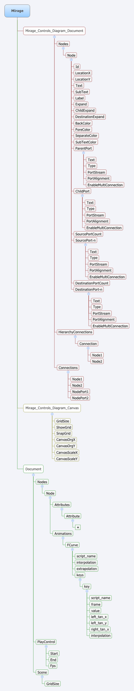

XML形式
Mirage ファイルは XML ファイルです。
スクリプト名
ノードのアトリビュートを参照してください。
仕様

Mirage
ルート。
Mirage_Controls_Diagram_Document
<Mirage>
Mirage.Conttrols.Diagram 用ドキュメントのルート。
属性:
version: バージョン情報
Nodes
<Mirage><Mirage_Controls_Diagram_Document>
ノードコンテナ。
属性:
count: ノード数
Node
<Mirage><Mirage_Controls_Diagram_Document><Nodes>
ノード。
Id
<Mirage><Mirage_Controls_Diagram_Document><Nodes><Node>
ノード ID。int 型。
LocationX
<Mirage><Mirage_Controls_Diagram_Document><Nodes><Node>
X 座標値。int 型。
LocationY
<Mirage><Mirage_Controls_Diagram_Document><Nodes><Node>
Y 座標値。int 型。
Text
<Mirage><Mirage_Controls_Diagram_Document><Nodes><Node>
ノード名。string 型。
SubText
<Mirage><Mirage_Controls_Diagram_Document><Nodes><Node>
サブテキスト。string 型。
Label
<Mirage><Mirage_Controls_Diagram_Document><Nodes><Node>
ラベル名。string 型。
Expand
<Mirage><Mirage_Controls_Diagram_Document><Nodes><Node>
折り畳みフラグ。bool 型。
ChildExpand
<Mirage><Mirage_Controls_Diagram_Document><Nodes><Node>
子ノード折り畳みフラグ。bool 型。
DestinationExpand
<Mirage><Mirage_Controls_Diagram_Document><Nodes><Node>
出力ノード折り畳みフラグ。bool 型。
BackColor
<Mirage><Mirage_Controls_Diagram_Document><Nodes><Node>
背景色。Color 型。書式は "R,G,B,A"。
ForeColor
<Mirage><Mirage_Controls_Diagram_Document><Nodes><Node>
前景色。Color 型。書式は "R,G,B,A"。
SeparateColor
<Mirage><Mirage_Controls_Diagram_Document><Nodes><Node>
分割線色。Color 型。書式は "R,G,B,A"。
SubTextColor
<Mirage><Mirage_Controls_Diagram_Document><Nodes><Node>
サブテキスト色。Color型。書式は "R,G,B,A"。
ParentPort
<Mirage><Mirage_Controls_Diagram_Document><Nodes><Node>
親ポート。
Text
<Mirage><Mirage_Controls_Diagram_Document><Nodes><Node><ParentPort>
ポート名。string 型。
Type
<Mirage><Mirage_Controls_Diagram_Document><Nodes><Node><ParentPort>
ポートのタイプ。int 型。
PortStream
<Mirage><Mirage_Controls_Diagram_Document><Nodes><Node><ParentPort>
入力か出力かどうか。int 型。
PortAlignment
<Mirage><Mirage_Controls_Diagram_Document><Nodes><Node><ParentPort>
ポートのアライメント。int 型。
EnableMultiConnection
<Mirage><Mirage_Controls_Diagram_Document><Nodes><Node><ParentPort>
複数のポートと接続できるかどうか。bool 型。
ChildPort
<Mirage><Mirage_Controls_Diagram_Document><Nodes><Node>
子ポート。ParentPort と構造は同じ。
SourcePortCount
<Mirage><Mirage_Controls_Diagram_Document><Nodes><Node>
入力ポートの数。値分、この後に SourcePort が続く。
SourcePort-n
<Mirage><Mirage_Controls_Diagram_Document><Nodes><Node>
入力ポート。構造は ParentPort と同じ。
DestinationPortCount
<Mirage><Mirage_Controls_Diagram_Document><Nodes><Node>
出力ポートの数。値分、この後に DestinationPort が続く。
DestinationPort-n
<Mirage><Mirage_Controls_Diagram_Document><Nodes><Node>
出力ポート。構造は ParentPort と同じ。
SourcePortCount
<Mirage><Mirage_Controls_Diagram_Document><Nodes><Node>
入力ポートの数。値分、この後に SourcePort が続く。
HierarchyConnections
<Mirage><Mirage_Controls_Diagram_Document>
階層のノード接続情報。
属性:
count: 接続数
Connection
<Mirage><Mirage_Controls_Diagram_Document><HierarchyConnections>
ノードの接続情報。
Node1
<Mirage><Mirage_Controls_Diagram_Document><HierarchyConnections><Connection>
接続元のノード ID。int 型。
Node2
<Mirage><Mirage_Controls_Diagram_Document><HierarchyConnections><Connection>
接続先のノード ID。int 型。
Connections
<Mirage><Mirage_Controls_Diagram_Document>
入力ポートと出力ポートとの接続情報。
属性:
count: 接続数
Connection
<Mirage><Mirage_Controls_Diagram_Document><Connections>
ノードの接続情報。
Node1
<Mirage><Mirage_Controls_Diagram_Document><Connections><Connection>
接続元のノード ID。int 型。
Node2
<Mirage><Mirage_Controls_Diagram_Document><Connections><Connection>
接続先のノード ID。int 型。
NodePort1
<Mirage><Mirage_Controls_Diagram_Document><Connections><Connection>
接続元のポート名。string 型。
NodePort2
<Mirage><Mirage_Controls_Diagram_Document><Connections><Connection>
接続先のポート名。string 型。
Mirage_Controls_Diagram_Canvas
<Mirage>
Mirage.Controls.Diagram の情報。
属性:
version: バージョン情報
GridSize
<Mirage><Mirage_Controls_Diagram_Canvas>
グリッドのサイズ。int 型。
ShowGrid
<Mirage><Mirage_Controls_Diagram_Canvas>
グリッドの表示。bool 型。
SnapGrid
<Mirage><Mirage_Controls_Diagram_Canvas>
グリッドにスナップするかどうか。bool 型。
CanvasOrgX
<Mirage><Mirage_Controls_Diagram_Canvas>
キャンバスの原点 X 座標値。int 型。
CanvasOrgY
<Mirage><Mirage_Controls_Diagram_Canvas>
キャンバスの原点 Y 座標値。int 型。
CanvasScaleX
<Mirage><Mirage_Controls_Diagram_Canvas>
キャンバスの X 軸スケール。float 型。
CanvasOrgX
<Mirage><Mirage_Controls_Diagram_Canvas>
キャンバスの Y 軸スケール。float 型。
Document
<Mirage>
ドキュメント情報。
Nodes
<Mirage><Document>
ノードコンテナ。
属性:
count: ノード数
Node
<Mirage><Document><Nodes>
ノード。
diagramNode
<Mirage><Document><Nodes><Node>
Mirage.Controls.Diagram のノード ID。
Attributes
<Mirage><Document><Nodes><Node>
アトリビュートコンテナ。
属性:
count: アトリビュートの数
Attribute
<Mirage><Document><Nodes><Node><Attributes>
アトリビュート。アトリビュートは以下のものがあり、それぞれ子要素が変わります。
- Boolean
- Integer
- Float
- String
- Vector3
- Color4
- Matrix
Boolean
value: bool 型。
Integer
value: int 型。
Float
value: float 型。
String
value: string 型。
Vector3
x: x 座標値。float 型
y: y 座標値。float 型
z: z 座標値。float 型
Color4
r: 赤成分。float 型
g: 緑成分。float 型
b: 青成分。float 型
a: α成分。float 型
Matrix
m11: float 型。
m12: float 型。
m13: float 型。
m14: float 型。
m21: float 型。
m22: float 型。
m23: float 型。
m24: float 型。
m31: float 型。
m32: float 型。
m33: float 型。
m34: float 型。
m41: float 型。
m42: float 型。
m43: float 型。
m44: float 型。
属性:
name: 属性名
scriptName: スクリプト名
Animations
<Mirage><Document><Nodes><Node>
アニメーションコンテナ。
属性:
count: アニメーション数
FCurve
<Mirage><Document><Nodes><Node><Animations>
アニメーション。
script_name
<Mirage><Document><Nodes><Node><Animations><FCurve>
スクリプト名。string 型。
interpolation
<Mirage><Document><Nodes><Node><Animations><FCurve>
内挿タイプ。int 型。
extrapolation
<Mirage><Document><Nodes><Node><Animations><FCurve>
外挿タイプ。int 型。
keys
<Mirage><Document><Nodes><Node><Animations><FCurve>
キーフレームコンテナ。
属性:
count: キーフレーム数
key
<Mirage><Document><Nodes><Node><Animations><FCurve><keys>
キーフレーム。
script_name
<Mirage><Document><Nodes><Node><Animations><FCurve><keys><key>
スクリプト名。string 型。
frame
<Mirage><Document><Nodes><Node><Animations><FCurve><keys><key>
フレーム。float 型。
value
<Mirage><Document><Nodes><Node><Animations><FCurve><keys><key>
値。float 型。
left_tan_x
<Mirage><Document><Nodes><Node><Animations><FCurve><keys><key>
左タンジェント X。float 型。
left_tan_y
<Mirage><Document><Nodes><Node><Animations><FCurve><keys><key>
左タンジェント Y。float 型。
right_tan_x
<Mirage><Document><Nodes><Node><Animations><FCurve><keys><key>
右タンジェント X。float 型。
right_tan_y
<Mirage><Document><Nodes><Node><Animations><FCurve><keys><key>
右タンジェント Y。float 型。
interpolation
<Mirage><Document><Nodes><Node><Animations><FCurve><keys><key>
補間タイプ。int 型。
PlayControl
<Mirage><Document>
プレイコントローラ情報。
Start
<Mirage><Document><PlayControl>
シーン再生開始フレーム。int 型。
End
<Mirage><Document><PlayControl>
シーン再生終了フレーム。int 型。
Fps
<Mirage><Document><PlayControl>
Fps。double 型。
Scene
<Mirage><Document>
シーン情報。
GridSize
<Mirage><Document><Scene>
グリッドサイズ。float 型。